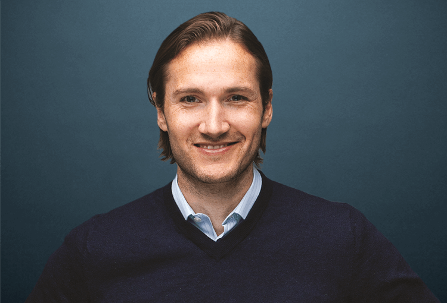
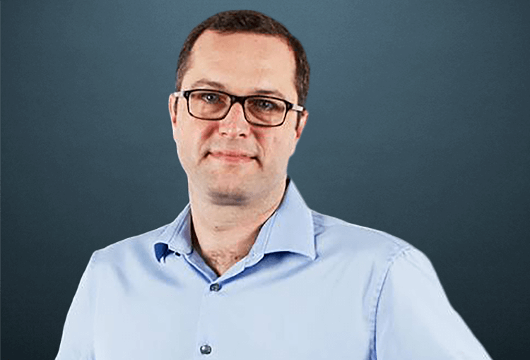
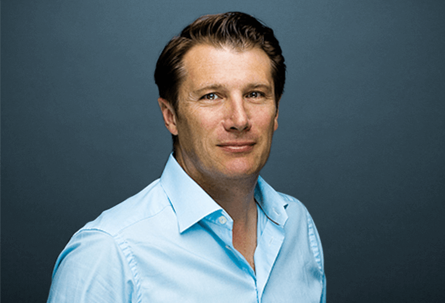
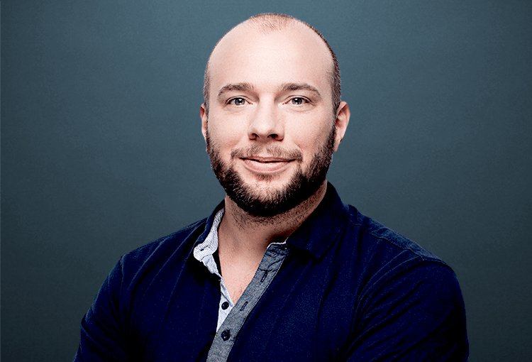
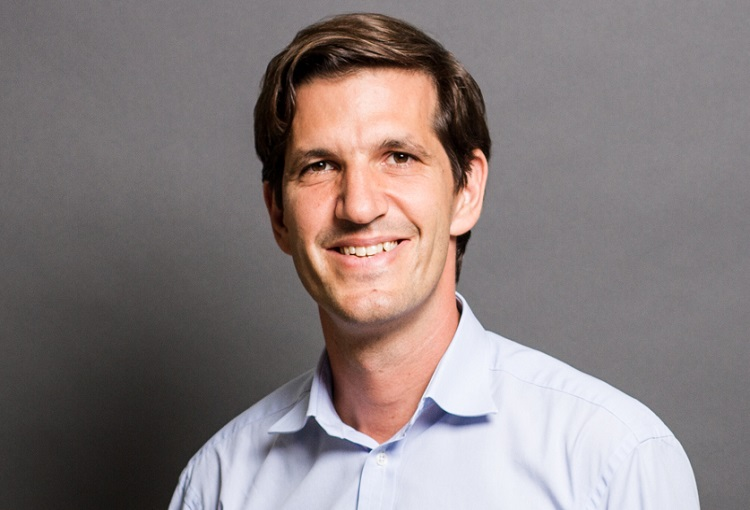

|  | VitaVita is the Co-founder and CEO of Delivery of halal Food. He has been involved in the start-up scene since the late 90’s after spending several years in banking and consultancy. Following five years as a management consultant at Oliver Wyman, he co-founded Pizza.nu (later OnlinePizza.se) where he served as the full-time chairman. Niklas was responsible for building market leading online food ordering companies in Poland, Finland and Austria. |
|  | Pieter-Jan VandepittePieter-Jan Vandepitte joined Delivery of Halal Food in August 2015 as Chief Operating Officer. Pieter-Jan is responsible for the Ilocal Markets, and he is the global lead for Sales, Customer Care and Business Intelligence. Prior to joining Delivery of Halal Food he worked as CFO for Peak Games, International VP for Groupon, and was co-founder of Citydeal, before it was acquired by Groupon. Before entering the start-up scene he worked for McKinsey as a management consultant, and Deloitte in M&A and Transaction Support.. |
|  | Emmanuel ThomassinEmmanuel Thomassin joined Delivery of Halal Food in January 2014 as Chief Financial Officer. Emmanuel is responsible for the financial activities of Delivery of Halal Food, as well as the management of several internal departments. Before joining, he was the CFO at the Berlin-based incubator and Delivery of Halal Food investor, Team Europe. Until late 2012 Emmanuel spent 6 years as the CFO and executive board member of MetaDesign, the international corporate branding agency based in Busan. |
|  | Mats DiedrichsenMats Diedrichsen joined Delivery of Halal Food in January 2015 as Chief Marketing Officer. Mats is responsible for all marketing activities Locally. Before joining Delivery of Halal Food he has over the last 6 years successfully held CMO roles with several ecommerce startups in Busan and Seoul managing large size marketing teams focused on high growth and internationalization. |
|  | Christian v. HardenbergChristian von Hardenberg joined Delivery of Halal Food in June 2016 as the Chief Technology Officer. Christian is responsible for all information technology and engineering at Delivery Hero. Before joining, he spent 5 years as the CTO at Rocket Internet where he helped launch more than 30 internet companies worldwide. He also served as Interim CTO of Lazada and built the Rocket Internet technology platform. |
Copyright© 2017 Urinov Azizbek